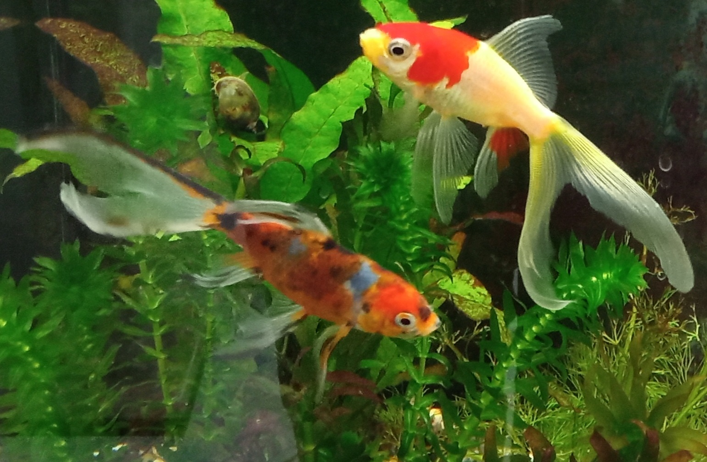

Montando um aquário de forma simples e conscientizada
Já lhe ocorreu de ter um aquário lindo, mas que ocorria frequentemente o adoecimento de peixes e plantas, mesmo seguindo as prescrições de um profissional?
Neste blog, separamos tópicos importantíssimos que te ajudarão a ter o aquário dos sonhos, de uma forma em que peixes e plantas convivam saudavelmente.
Mas antes de começarmos, vamos bater um papo rapidamente.
Das opções abaixo, qual você mais se identifica?
- Não possui experiência sobre aquarismo, mas gostaria de ter um aquário.
- Não possui experiência sobre aquarismo e tem aquário.
- Possui pouca experiência sobre aquarismo e tem aquário.
- Possui experiência sobre aquarismo e tem aquário.
- Outro.
Não precisa se preocupar se você possui ou não experiência no assunto, estamos aqui especialmente para compartilhar nosso conhecimento de um jeito mais prático.
Pense que, todo o assunto abordado fará tanto seus peixes quanto plantas mais felizes e saudáveis.
Agora voltando ao assunto, vamos falar um pouco mais sobre o aquarismo.
O aquarismo envolve uma série de elementos essenciais que devem ser olhados com muita atenção uma vez que se deseja ter um aquário bonito e saudável.
Para atingir esse aspecto de beleza associado ao bem-estar do aquário, é preciso ter conhecimento de que elementos como a qualidade da água, ph, carbono e luminosidade, tem que estar de acordo com as exigências de cada espécie de peixe e planta (caso queira montar um aquário plantado).